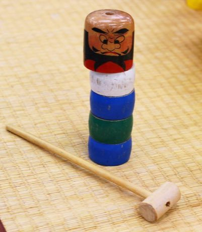

Home / Modern Heritage / Japan and Korea
Playable heritage gameDaruma Otoshi
Also known as だるま落とし · tower knock-out
A traditional Japanese skill toy: a tower of coloured wooden discs with a round painted head on top. Using a small wooden mallet you knock the discs out one at a time from the side, so that the rest drop straight down and the head ends up on the base.


How to play
- Press the disc you want to remove, pull the mallet back and let go. Aim for the marked window on the strength gauge.
- A blow that is too soft only shakes the tower; one that is too hard drags the next disc out as well.
- Work from the bottom up and keep the wobble low until the head comes down.
Rules at a glance
- A clean blow sends one disc out and scores 1; the wobble settles a little.
- A soft blow or a hard blow adds to the wobble; when the wobble is full the tower falls and the round ends.
- Bringing the head down to the base with the tower still standing scores a bonus of 3.
- Each round gives eight blows; three rounds make a game. Discs higher up need a slightly firmer blow.
About the tradition
A children's game of patience and a steady hand from Japan, played with a small mallet and a tower of discs. The toy is still made in wood and played at home and at gatherings.
Origins
Usually placed in the era of Modern Heritage (1800 to today), although its exact origins are uncertain, within the cultural world of Japan and Korea.
Credits
- Game design: World Heritage Games (original)
- Photo: Japanexperterna.se, CC BY-SA 3.0, source on Wikimedia Commons
- Text: CC BY-SA 4.0, World Heritage Games.
Sources

Get the app
Daruma Otoshi is one of 18 sports and skill games in the Sports & Skill of the World app for iPhone, iPad and Android. Submitted to the App Store and Google Play; in review. Store links appear here the day it goes live. One app, many traditions, no account needed.
More games to play


Sashiko Stitch Patterns
Japan · Crafts and makingPlay preview · in the Textile Crafts of the World app
More from Japan


Dougong Bracket Stacking
China +2 · Puzzles and mind games
Dumpling Pleating
China +2 · Crafts and making
E-sugoroku
Japan · Board and table games